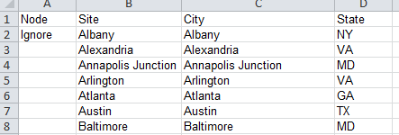
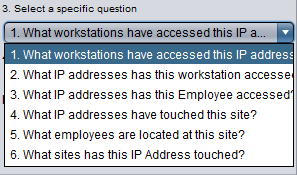
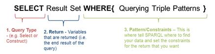
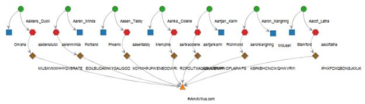
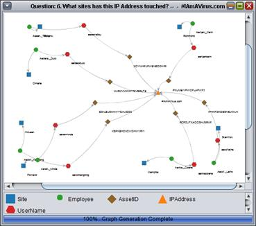

SEMOSS is a data-driven application that enables users to explore relationships and connections in an interactive format through intermediate conduits, i.e. transitive relationships. This document provides general usage instructions and guidance in deployment of the open source components of SEMOSS, in contrast to the developer guide, which provides instructions and guidance in terms of development "on top of" the tool.
Figure 1.1.1
Figure 1.1.2 Main Tab
There are five default tabs that exist on the setup pane. The main tab appears when the application is started; the others (Graph Labels, Graph Cosmetics, SUDOWL, and Graph Filter) can be toggled.
Main Tab
1. Database selection
2. Perspective categories
3. Question selections
4. Constraints
5. Create button
6. Undo/remove button
7. Augment graph
8. Custom SPARQL query
Database selection
This is the area where the active database is selected. The map sheet contains indexes to the available databases. The map sheet is essentially an index of all of the data and information that is available within the application (more instructions on loading databases and the map sheet are contained in Section 2: Loading a Database).
SEMOSS allows exploration of data residing in these databases as it is a single database.
Perspective categories
This section contains the available perspectives or different "point of views" of the data stored in the databases. A perspective allows a user to examine in detail data from a particular point of view. These details are formulated as questions pertaining to a specific perspective.
Question selection
This is the area where the active database is selected. The map sheet contains indexes to the available databases. The map sheet is essentially an index of all of the data and information that is available within the application (more instructions on loading databases and the map sheet are contained in Section 2: Loading a Database).
Constraints
Sometimes a question (SPARQL query) requires an input parameter (such as IP Address); in this case a drop-down box will appear allowing the user to select the appropriate constraint. Additional information is deferred to the section on writing SPARQL queries.
Create Button
This button executes the constructed SPARQL query and displays the result either as a graph or as a grid.

Figure 1.1.3 Example Graph Query
Undo/remove
The undo button undoes the last action the user has taken. The first time the button is pressed, it removes relevant properties. The second time it is pressed, it removes nodes from the graph.
Consequently, to completely undo the prior action, this button needs to be pressed twice.
Augment Graph
The augment graph function allows the user to overlay components of an additional query onto a graph. This is useful when comparing connections between two comparative objects.
Custom SPARQL Query
This component, when the "Custom" button is toggled, allows the user to (a) modify the current SPARQL query and (b) change the type of play sheet that the data is displayed on. Not all query types are able to be displayed on all play sheet types, so slight query modifications are often required in order to change the play sheet.
Further information about the play sheets can be found in the Developer's Guide.
Graph Labels Tab
The graph labels tab allows the user to customize the labels and tooltips that are displayed on a graph. Toggling the select button for an item on or off will determine whether it is displayed. The label toggle displays the information on the graph and the tooltip displays information on a mouse-over event. Edges and nodes can both have labels attached to them.
Various options exist, including the ability to display the instance name, the node type, and the URI of the node.
Graph Cosmetics Tab
The graph cosmetics tab allows the user to modify the color and shape of a given node in the database. Selecting the first instance for a given node (the Select All Instance) allows a user to modify all of the instances of that node type. Default shapes and colors for a given node type can be set in the map sheet (more information is located in the database setup section of the manual).
Graph Filter Tab
The graph filter tab allows the user to toggle the display of various nodes within the graph.
In the middle of the filter tab is a properties window that displays the properties associated with a given node instance or edge. This is useful in exploration of properties attached to a given node.
The bottom section of the filter tab contains the ability to filter the graph for various relationships or verbs within the graph. Again, selecting the first instance of a given relation (the select all instance) toggles all of the relations associated with a given node.
SUDOWL Tab
The SUDOWL tab allows the user to explore the graph in the display pane without the presence of a metamodel. The property column describes each of the relationships that are displayed.
When the "create" button is toggled and a graph is created, a window within the display pane appears showing either a graph or a grid sheet. These sheets are where the insights are generated for future analysis.
Graph Play Sheet Functionality
The graph play sheet has a number of ways to manipulate a graph after it is created, most of which are accessible from the right click menu. It is important to note that the right click functionality is highly dependent on whether or not a node or a group of nodes is selected as well as which node(s) is selected.
Figure 1.2.1 Right-Click Menu
Show Minimum Spanning Tree
This feature essentially determines the minimum amount of edges necessary to connect all of the vertices of the graph. This functionality is useful in identification of redundancies within the network.
Highlight Adjacent
This feature highlights all of the nodes that are adjacent to a selected node. This can be useful in identification of connections in a cluttered graph.
Move Graph
Move graph allows the user to move the whole graph as a single image about the canvas. To revert back to the default selection after a graph is moved to the preferred location, select the pick graph mode.
Pick
Pick Graph allows the user to select specific nodes on the graph and move them about the canvas. This option is the default selection when the tool is opened.
Convert to Table
This feature creates a table of all of the triples that are currently being used to display the graph.
Traverse Freely from Node
This feature allows the user to extend the graph from the selected node(s) to any of the node types that are upstream or downstream of it (them).
This will connect all nodes of the same type to their respective node instances.
Traverse Freely from Selected Instance
This feature allows the user to connect to various upstream and downstream nodes that are connected to this particular instance in the RDF store. This will connect only the selected instance to its respective node instances.
Extend Graph
Extend graph allows the user to add in additional components based on a given set of constraints.
Perform Algorithms
Various algorithms are included in the initial open source version of SEMOSS. These algorithms provide insights into various components of the graph. Currently the following algorithms are included:
Modify Shape
Similar to the Graph cosmetics tab, this function allows the user to customize the shape of the particular selected instance(s)
Modify Color
Similar to the Graph cosmetics tab, this function allows the user to customize the color of the particular selected instance(s).
Modify Layout
This feature allows the user to select the graph layout. Various graph layouts may be useful for various purposes and all graphs are force-directed layout algorithms. The tree layout will work so long as there are no loops within the graph.
Hide/Unhide Nodes
Hide Nodes allows the user to hide the selected instance on the graph. This is similar to the graph filter tab.
Grid Play Sheet Functionality
While not as robust as the graph sheet functionality, there are additional capabilities within the graph sheet.
Sort
Selecting a column header will allow the user to sort the graph alphabetically or numerically, depending on what type of data is present in the column. Clicking again will reverse the order.
Copy and Paste
To copy and paste from a grid sheet to an Excel workbook, press Ctrl +A then Ctrl + C to select and copy all objects in the table. The data can then be paste in Excel using the right-click or Ctrl + V.
This is the set of steps that must be completed in order to create a new database engine and to load new data to the engine from Excel. Note that some of these steps may be done simultaneously, but all of the steps must be completed to create a fully functional engine.
There are other ways to create an engine and connect it to a data store, but this is the easiest way, assuming that the data is not already structured and formatted.
A tutorial video can be accessed at this link depicting how to create a new database engine:here.
The creation of a metamodel involves the construction of concepts (data) and their relationships (how data pieces relate to each other) and consequently provides analysts with a framework through which to explore the database and identify meaningful insights.
Usually, the metamodel is displayed as a map, as shown below for our security database in Figure 2.1.1.
Development of the metamodel is one of the most important and complex tasks that needs to be completed in order to be able to efficiently and effectively extract data from the engine. If the metamodel is not thorough, straightforward, and comprehensive, it will be very difficult to extract insights from any set of data. The most important paradigm to consider is that the metamodel should be constructed based on the fundamental relationships between the data, as opposed to a structure that is based on answering specific, known, questions from the data.
This allows the database to be queried based on prospective insights (as opposed to modifying the database to allow for this to happen).
Figure 2.1.1 below contains the base metamodel for our sample security database. The metamodel is constructed such that each of the node types and its relationships with other node types is represented by boxes and lines.

Figure 2.1.1 Security Database Model
Note: This section only applies if loading from an Excel loading sheet.
Once the metamodel is created, the base objects and relationships must be loaded into the RDF map sheet, named in the initial open-source release RDF_Map.prop. This step ensures that the data loads successfully and correctly aligns with the previously designed metamodel.
Note that all components are case sensitive. Therefore case must be consistent across all instances for matches to work correctly.
Base Objects
Here all of the base objects are added (i.e. the individual nodes in the metamodel that represent a node type within SEMOSS).
First, Navigate to the ##Base Objects## Section of the map sheet.
Then, for each new base object (e.g. type AssetID) enter the name, tab over, and enter the URI for the base object. The base objects for the security database (based on the metamodel identified above) would be:
##Base Objects##
AssetID http://Sdb.com/ontologies/Concept/AssetID
IPAddress http://Sdb.com/ontologies/Concept/IPAddress
UserName http://Sdb.com/ontologies/Concept/UserName
Employee http://Sdb.com/ontologies/Concept/Employee
Server http://Sdb.com/ontologies/Concept/Server
Site http://Sdb.com/ontologies/Concept/Site
Base Relations
Here the relationships that exist in the metamodel are added.
First, navigate to the ##Base Predicates## Section of the prop sheet.
Then, for each predicate (e.g. UserName_AssignedTo_AssetID) enter the name, tab over, and enter the URI for the relation.
The base objects for the security database (based on the metamodel identified above) would be:
##Base Predicates##
AssetID_Accesses_IPAddress http://Sdb.com/ontologies/Relation/Accesses
UserName_AssignedTo_AssetID http://Sdb.com/ontologies/Relation/AssignedTo
Employee_Has_UserName http://Sdb.com/ontologies/Relation/Has
Employee http://Sdb.com/ontologies/Concept/Employee
Employee_AssignedTo_Site http://Sdb.com/ontologies/Relation/AssignedTo
AssetID_Accesses_Server http://Sdb.com/ontologies/Relation/Accesses
Base Relationships
For each of the new node types and verbs, the base relationship is added to denote what type of object it is. For this first component, BaseMetaRelationships, all of the nodes that are of type concept (i.e. a node) are added. The structure is such that the node types in question (http://Sdb.com/ontologies/Concept/IPAddress) are first, the standards-based predicate (http://www.w3.org/2000/01/rdf-schema#subClassOf) to denote the subclass is second, and the class (http://Sdb.com/ontologies/Concept) is the final component.
In our example, the addition of all of the base meta relationships necessary to create the security database are shown.
BaseMetaRelationships=http://Sdb.com/ontologies/Concept+http://www.w3.org/1999/02/22-rdf-syntax-ns#type+http://www.w3.org/2000/01/rdf-schema#Class;http://Sdb.com/ontologies/Concept/AssetID+http://www.w3.org/2000/01/rdf-schema#subClassOf+http://Sdb.com/ontologies/Concept;http://Sdb.com/ontologies/Concept/IPAddress+http://www.w3.org/2000/01/rdf-schema#subClassOf+http://Sdb.com/ontologies/Concept;http://Sdb.com/ontologies/Concept/UserName+http://www.w3.org/2000/01/rdf-schema#subClassOf+http://Sdb.com/ontologies/Concept;http://Sdb.com/ontologies/Concept/Employee+http://www.w3.org/2000/01/rdf-schema#subClassOf+http://Sdb.com/ontologies/Concept;http://Sdb.com/ontologies/Concept/Site+http://www.w3.org/2000/01/rdf-schema#subClassOf+http://Sdb.com/ontologies/Concept;http://Sdb.com/ontologies/Concept/Server+http://www.w3.org/2000/01/rdf-schema#subClassOf+http://Sdb.com/ontologies/Concept;
The same task is then completed for BaseMetaProperties, thus, each of the new relationships is loaded into the prop sheets. The structure is such that the node types in question (http://Sdb.com/ontologies/Relation/AssignedTo) are first, the standards-based predicate (http://www.w3.org/2000/01/rdf-schema#subPropertyOf) to denote the subclass is second, and the property (http://Sdb.com/ontologies/Relation) is the final component. This is the example for the security database:
BaseMetaProperties=http://Sdb.com/ontologies/Relation+http://www.w3.org/1999/02/22-rdf-syntax-ns#type+http://www.w3.org/1999/02/22-rdf-syntax-ns#Property; http://Sdb.com/ontologies/Relation/AssignedTo+http://www.w3.org/2000/01/rdf-schema#subPropertyOf+http://Sdb.com/ontologies/Relation;http://Sdb.com/ontologies/Relation/Accesses+http://www.w3.org/2000/01/rdf-schema#subPropertyOf+http://Sdb.com/ontologies/Relation; http://Sdb.com/ontologies/Relation/Has+http://www.w3.org/2000/01/rdf-schema#subPropertyOf+http://Sdb.com/ontologies/Relation;
Setting the Engine
The final task that needs to be completed is the engine setup. Completion of this step requires a decision to be made in identification of the engine to be used and creation of the questions sheet; explanation of this process is deferred to their respective process step sections.
The code that needs to be added simply specifies the engine and database locations that are used to setup the database to be shown, so once decided, this can be added.
At the top of the prop sheet, modify it such that the engine and locations are selected. Consider this example for the security database. The first component specifies the databases that are loaded; multiple databases can be loaded and are delimited by semicolons.
The second component is the engine used to read the database, the third is the prop sheet location (more on the prop sheet in future steps), and the final sheet is the questions sheet.
ENGINES Security
Security prerna.rdf.engine.impl.BigDataEngine
Security_PROP db/demo/Security.properties
Security_DREAMER questions/Security_Questions.properties
Other Functionalities (Optional)
Other functionalities in the prop sheet can be added, included entering default colors and shapes for nodes. The base colors for the security database are entered as below:
#Shape maps
Site_SHAPE SQUARE
IPAddress_SHAPE TRIANGLE
UserName_SHAPE HEXAGON
AssetID_SHAPE DIAMOND
Employee_SHAPE CIRCLE
#Shape Colors
Site_COLOR BLUE
IPAddress_COLOR ORANGE
UserName_COLOR RED
AssetID_COLOR BROWN
Employee_COLOR GREEN
Selecting the engine defines the process through which the database is read into SEMOSS. This manual documents the use of the Big Data Engine, which provides the added functionality of converting Excel-based inputs into the database.
The loading sheets are setup such that there is an introductory loader tab, and a tab that contains an individual set of triples (e.g. all of the AssetID to IP Address relationships).
Loader Tab
The Loader tab essentially contains the name of the sheets that are read into the database. The name of the tab must be "Loader", and adjacent in column B to each of the tabs that are loaded should be the text "Usual."
Cell A1 should contain the text "SheetName" and Cell B1 must contain the text "Type."
The tab should be constructed as follows (example for the security database):

Figure 2.3.1 Loader Tab
Relation Tabs: Loading Triples
The other tabs should individually contain specific information surrounding an individual triple store that is to be loaded into the database. For example, . Cell A1 should contain the text "Relation", Cell A2 should contain the predicate (AssignedTo in this case), Cell B1 should contain the first node type (e.g. UserName), and cell C1 should contain the second node type (e.g. AssetID).
Column B should contain the actual first node instances, and column C should contain the second node instances. Properties on the edges (e.g. not triples, but data that may be relevant as a property such as a cost) can be attached in adjacent columns. Note that the property is not added to the node, but rather, the edge. To add properties to nodes a separate type of sheet is required (as documented below). Properties do not need to be added in the prop sheet, but are more difficult to visualize and query (example shown in figure 2.3.2 for the security database).
Figure 2.3.2 Sample Triple Loading Sheet
Node Property Tabs: Loading Properties
In the case where a property is desired to be added onto a node as opposed to a node edge (as above), a separate tab is necessary to be created to show this information. The structure of the sheet is displayed below for the Site property sheet for the security database, where city and state are denoted as properties of an individual site name.
Figure 2.3.3 Sample Property Loading Sheet
Once the excel files are generated, the database needs to be created.
There are two options to create a database: using the user interface import functionality or using the POIReader java file (POIReader is explained in the developer guide). The user interface is somewhat more intuitive, and does not require manual modification of the java code. However, it is not as efficient in processing multiple workbooks or debugging potential loading sheet data issues.
When updating a database (i.e. modifying the data in a current data), the best mechanism to ensure that duplicates do not exist is to delete the old .jnl file and then reload all of the new loading sheets from the workspace. This process tends to lend itself better to POIReader than the UI update.
UI Import
The user interface on the DB Modification Tab provides the capability to generate a new database engine without having to process through code. However, it is difficult to debug loading sheets with errors in the UI Import, and does not streamline the import of multiple files simultaneously.
Within the user interface import, there are two options: add to existing database, and create a new database.
Add to Existing Database
This option will load all triples specified in the Excel workbook on top of an already running database. Nothing will be overwritten in the previously existing database. If an exact triple specified in the workbook already exists in the database, the triple will remain but will not be duplicated (in this instance, , and all must match).
The database to be augmented must be selected in the database selection main tab on the left.
Create New Database
This option will create a completely new database and automatically have it populated on the left panel. The name of the new database cannot contain any spaces. All objects types and predicate types must be contained in the Base Objects and Base Predicates of the map file. The map file cannot be open when the import is running.
The files that are created (Assuming that the inputted name is "NewDBName"):
In addition, the map sheet is edited directly in the project folder to contain the new databases such that when the new db is created, it will appear in the navigation menu.
The questions sheet contains the base SPARQL queries that can be queried out of the box by SEMOSS.
The question sheet contains the queries that are specific to the database. Below the question sheet for the security database is explored. Note that the bottom components of other question sheets should be pulled through when creating new question sheets to permit functionalities such as traverse freely.
If using POIReader to create a new database, the question sheet must be created manually. If using the UI import, the question sheet will be created automatically using a base subset of "generic" questions.
First, the available perspectives are denoted. Perspectives are essentially a grouping of questions. The generic perspective is included as a base in a question sheet, and the security perspective in this case is specific to our security database, and provides queries specific to the database.
PERSPECTIVE Generic-Perspective;Security-Perspective
Next, the questions within each perspective are denoted, as shown below, there are four questions for the generic perspective (GQ1 through GQ4) and six base questions for the security perspective (SQ1 to SQ6).
Generic-Perspective GQ1;GQ2;GQ3;GQ4
Security-Perspective SQ1;SQ2;SQ3;SQ4;SQ5;SQ6
Next, the text of the questions is denoted for the user to select when the query is selected. The Questions for the security database are denoted below, and this output in the tool is denoted in figure 2.5.1.
SQ1 What workstations have accessed this IP address?
SQ2 What IP addresses has this workstation accessed?
SQ3 What IP addresses has this Employee accessed?
SQ4 What IP addresses have touched this site?
SQ5 What employees are located at this site?
SQ6 What sites has this IP Address touched?
Finally, the text of the individual queries is denoted. A stock query requires two components, first the specification of the layout (e.g. graph or grid play sheet) and then the actual query text.
Consider the SQ1 Query (What Workstations have accessed this IP Address?).
SQ1_LAYOUT prerna.ui.components.GraphPlaySheet
SQ1_QUERY CONSTRUCT {?AssetID ?Accesses ?IPAddress} WHERE {{?IPAddress < http://www.w3.org/2000/01/rdf-schema#label > "@IPAddress-IPAddress@";}{?IPAddress < http://www.w3.org/1999/02/22-rdf-syntax-ns#type> < http://Sdb.com/ontologies/Concept/IPAddress>;}{?Accesses < http://www.w3.org/2000/01/rdf-schema#subPropertyOf>
< http://Sdb.com/ontologies/Relation/Accesses > ;}{?AssetID < http://www.w3.org/1999/02/22-rdf-syntax-ns#type > < http
://Sdb.com/ontologies/Concept/AssetID>;}{?AssetID ?Accesses ?IPAddress}
Note that the play sheet specific for a grid (i.e. table-based sheet is:
SQ1_LAYOUT prerna.ui.components.GridPlaySheet
In addition, grid queries begin with SELECT as opposed to CONSTRUCT.
Additional information and guidance surrounding creating SPARQL queries within SEMOSS is deferred to the SPARQL Queries within SEMOSS section.
Figure 2.5.1 Question Selection
SPARQL is the query language used to query different databases within SEMOSS. Querying in SPARQL is a means of retrieving or creating meaningful data from an RDF triple store.
This document does not provide in-depth guidance in generating SPARQL queries, for additional guidance, it is suggested to purchase Learning SPRAQL by Bob DuCharme. More information can be found here, and the book can be purchased on Amazon here. More information can be found here.
In the semantics-based RDF ontology, this high-level framework provides the context through which data is structured. The Resource Description Framework (RDF) is a data model for encoding, gathering, and representing information about resources. Elements in RDF are stored as Uniform Resource Identifiers (URIs) and are always part of a triple. Constructed like a sentence (with a subject, predicate, and object) the triple structure is relational in form. A triple is defined as where "< >" denotes a URI. For example, an Employee has a UserName (constructed as . These categories (e.g. Employee) are called types, which contain specific instances (e.g. John Smith). Thus, John Smith has J_Smith, or, < John Smith > < John Smith:J_Smith > < J_Smith >.
There are multiple types of queries available to SPARQL, however only the SELECT (which results in grids) and CONSTRUCT (which results in graphs) queries are used.
A query has three major parts: The Query Type (SELECT or CONSTRUCT), the return variables (what is to be returned from the query), and the pattern that the triples must follow, in other words as structured:
To query the database it is important to note the URI (Uniform Resource Index) of the particular types(s) that are to be queried. The query below is a simple query for the Security database, which traverses from the Asset ID to IP Address, based on a specified IP Address. This query would be used to identify what assets (computers) have visited a particular website, in identification of the cause of a particular virus. Additionally, the user can then extend from that particular object (traverse freely) through to other nodes to identify additional insights. This is performed by right clicking on the node in question and traversing to the desired additional node.
Here, a CONSTRUCT query is used because a graph is generated. Second, since only one relationship is traversed, from AccessID to IP Address, the result set is:
{?AssetID ?Accesses ?IPAddress}
Next, the patterns to be traversed are added. First, the components the user will select are added (denoted by two variables encapsulated by '@' signs:
{{?IPAddress "@IPAddress-IPAddress@";}
Finally, the core relationship is added:
{?AssetID ?Accesses ?IPAddress}}
Thus, the completed query is generated and loaded into the question sheet:
CONSTRUCT {?AssetID ?Accesses ?IPAddress} WHERE {{?IPAddress "@IPAddress-IPAddress@";}{?IPAddress ;}{?Accesses ;}{?AssetID ;}{?AssetID ?Accesses ?IPAddress}}
Again, this document does not include extensive SPARQL instructions or details.
Additional documentation surrounding writing SPARQL queries can be found at SEMOSS.org and through Bob DuCharme's book, Learning SPARQL.
The Security use-case example is meant to show how a network security analyst can identify meaningful insights surrounding a potential network infiltration by a malicious host. The scenario envisioned is that an employee likely visited a malicious website and that site infected the computer, and then a number of servers that support the enterprise.
The security analyst is interested in identifying the employee that went to the site, and identifying the potential impact to the enterprise of the malicious traffic.
The team has also generated a Youtube video discussing the concept (4.1) surrounding the security database as well as the actual use-case of traversing through the videos in the application.
Like most enterprises this data is located in disparate, disconnected data sets. Likely, there is a PeopleSoft Oracle solution which manages HR information for the company, an active-directory based asset database that contains all of the assets connected to the enterprise, and a web traffic log provided by the network support team. These databases are likely disconnected, and on-face, do not communicate with each other.
In order to identify information about the security breach, however, these databases will need to communicate to connect information surrounding the attack.

Figure 4.1.1 Disparate Databases
The SEMOSS team has extracted specific, relevant components from these databases and generated a metamodel (more information surrounding metamodels can be found in section 2.1).
However, this data is unfiltered and it must be processed and connected in SEMOSS for actionable insights to be generated. The Security metamodel is located in figure 4.1.2 below.
Essentially, the three disparate databases are connected through the metamodel and can be combined to generate insights surrounding the attack that occurred.

Figure 4.1.2 Security Database Metamodel
Traversing through the database is relatively straightforward. Let's imagine that the IP Address is known (for our demo we have used IAmAVirus.Com), and we want to identify insights surrounding what employees have accessed this host.
First select the (1) WebLog database (since the initial connection surrounds web traffic), then select the (2) Security Perspective, and then select a (3) Specific Question. In this case, the analyst is interested in identifying what workstations (assets) have accessed the particular IP Address.
Figure 4.1.2 Security Database Metamodel
Once the query is created, the available parameters are selected, in this case the IP Address, and then the create button is pressed to generate the initial graph (figure 4.2.2 below).

Figure 4.2.2 Workstation IP Address Query
Once the query is created, the available parameters are selected, in this case the IP Address, and then the create buttonNow, all of the workstation assets that have accessed that particular IP address have been identified.
Next, the analyst might be interested in the usernames associated with those particular asset identifiers. By first selecting the database to traverse to (e.g. the Asset Database) and then by right clicking on the individual node in question, the user can traverse to another node. In this case, the analyst will traverse through to username (figure 4.2.4 below).
Next, the user may be interested in identifying the names of the employees involved, so by switching to the PeopleSoft database perspective the analyst can traverse through to this question.
Next, the user may be interested in where these individuals are located (perhaps the security breach has occurred at a specific location), so the user can traverse through to these locations to identify the specific area where the breach has occurred (as in figure 4.2.5 below).
Figure 4.2.5 Security Database Metamodel
Finally, the analyst may be interested in what servers those assets have accessed, so by switching back to the traffic log, the user can traverse through to server. In addition, highlight adjacent functionality can be used to identify the specific nodes that a particular instance touches;
in this case, it appears as if a particular asset has touched an extraordinary amount of servers; possibly suggesting that that particular asset has infected the entire enterprise (as below).

Figure 4.2.6: Traverse Freely to identify malicuous host and highlight adjacent.
Through this analysis, we have identified that this particular user has likely gone to a malicious website, identified the party respinsible, as well as all of the servers this particular user has touched to identify what actions need to be taken to reduce the impact to the enterprise. In addition, this analysis has been performed by merging three separate, disparate databases that ordinarily would not communicate with each other.
Additional information surrounding SEMOSS is located here:
This guide takes an in depth look at the code behind SEMOSS and should be used as a jumping point for those interested in modifying features or developing additional features for SEMOSS.
This guide highlights the pieces that are most crucial to the functioning of SEMOSS as well as those that are of most interest to a potential user/developer. Note that this is not a comprehensive look at all of the code that makes up SEMOSS but rather a way of explaining the most critical pieces of code and describing how interacts with each other.
This guide should be used in conjunction with the SEMOSS User Guide as well as supporting documents such as Javadocs, all of which can be found on SEMOSS.org.
Throughout this page you will find various types of resources, such as:
A complete list of steps that must be taken to begin working on the code of SEMOSS as well as other important information to consider when working with the code.
A set of sequence and component diagrams depicting how SEMOSS processes various actions and outlining the interactions of its different components (Sections 1 and 2).
An overview of how SEMOSS is able to take in data and the engine classes used to access, process, and update these data sources (Section 3).
An introduction to the SEMOSS "Play Sheet" used for data visualization, including the different forms that it can currently take as well as some of its possible future forms (Section 4).
In order to begin working on SEMOSS, there are a number of files that must be downloaded and programs that must be installed. This section lays out what each of the steps are that must be taken to begin editing the code.
SEMOSS has been built using the Eclipse integrated development environment and it is therefore advisable to use the latest version of Eclipse for editing the code. Eclipse is available for downloadhere.A Java Development Kit (JDK) is also necessary to open SEMOSS for editing.
While most of the SEMOSS functionality works with a 64-bit JDK, it is recommended to use 32-bit to ensure all of the features work correctly.
The latest JDK is available for downloadhere.
The source code of SEMOSS is available for download from GitHub which can be accessed throughour github repository.
The following lays out the hierarchy used to organize the directory of SEMOSS and gives a brief overview of what each folder contains.
Java source folders that SEMOSS uses to build the user interface and handle most of the functionality. There are a number of packages within the src folder to further organize the code. To better understand the organization of the various packages, please consult the Javadoc that can be foundhere.
All database information, including how to access a given database and the data itself. The data generally takes the form of a .jnl file (though many other file types can be used such as .xml, .rdf, and .ttl) while the properties of the database are stored in a .properties file. The files in this folder are referenced in the RDF_Map.prop file.
Version information displayed on the Help tab of SEMOSS.
Images used throughout the application.
Properties files that contain all information surrounding the perspectives and questions that are displayed for a given engine (database). This information includes what perspectives and questions to display for an engine as well as details about how to process a given question such as what SPARQL query to run and what play sheet to display it on. The files in this folder also are referenced in the RDF_Map.prop file.
All of the JAR files that are referenced in the source code.
All of the training material displayed on the Help tab of SEMOSS is contained in this folder.
SEMOSS uses numerous JAR files from a wide variety various sources, including Apache, Jena, Sesame, and Jung. All of the JAR files can be found in the RDFGraphLib folder of the SEMOSS source code.
Directly in the main directory there are also a couple of important files regarding the configuration of SEMOSS. These files get run on Startup and play a crucial role in determining how the application functions.
This is the central properties sheet that is read by the Starter class on startup. All of the information contained in this file is critical to the loading of data into SEMOSS and its general functioning. Many of the pieces of this file can be found referenced in Section 6 of this document, but the following is a high level overview of what this file contains:
Engine information
This section of the Map file specifies what engines should be started when the application is first run as well as what other files (questions file, database properties file) are related to that specific engine.
Model-view conroller bindings
Lays out what listeners are connected to what Java Swing components on the main PlayPane. This section also details some default settings for the listeners, such as their view and right panel components. All of this information is read on startup and is necessary for the correct functioning of the buttons.
Shape and color maps
Contains information regarding how different node types are displayed by default on the graph play sheet, including the nodes' shape and color.
Base Objects and Base Predicates
Lays out how SEMOSS should translate Excel data to RDF. This section specifies the full RDF URI to be used for each of the different node and relationship types. More information on this can be found in Section 6 of this document.
Meta and core data
This section contains additional RDF triples that are included in every RDF database created through SEMOSS. These triples specify mainly subclass relationships of the node and relationship types and are used for SPARQL inference.
This file contains initiation information for the logger that is used throughout the application.
This section contains a number of sequence diagrams that lay out some of the most critical processes of SEMOSS.
This lays out the sequence of events that occur when the SEMOSS starter is run which calls perna.ui.main.Starter.main(String[]).
A PDF version of this diagram is available for download.
This lays out the sequence of steps that are taken to process a query. This action occurs when the Create button is pushed and the function exists in perna.ui.main.listener.imple.ProcessQueryListener.actionPerformed(ActionEvent). A PDF version of this diagram is available for download.
This section lays out the component diagrams for some of the most critical components of SEMOSS.
This is the component diagrams of the current play sheets in SEMOSS. There are three implementing classes GraphPlaySheet, GridPlaySheet, and GridRAWPlaySheet of the interface IPlaySheet. A PDF version of this diagram is available for download.
This component diagram lays out how our current Java Swing UI components are currently laid out. This is the foundation of the applications interface. A PDF version of this diagram is available for download.
This diagram lays out the layout of the popup that is used currently by the GraphPlaySheet. A PDF version of this diagram is available for download.
SEMOSS has the ability to perform analysis across multiple databases at runtime through the use of various engines. Each engine is connected to a specific RDF triple store and has the ability to extract, import, or update the data connected to it.
The specific type of engine to connect to a given RDF triple store depends on a number of attributes, including size and format, but the functionality of all engine types is similar. The interface IEngine is used to standardize the core functionalities of an engine and allows them to be used without first considering their specific types. This section will give an overview of this functionality that has been included in IEngine as well as explain the different types of engines that SEMOSS currently uses to access various triple stores.
The IEngine.java class is the interface class of SEMOSS used to standardize the functionality of the unique engine classes. As of version 1.0, SEMOSS has only implemented engines that connect to RDF triple stores, but an engine in SEMOSS can be written to take in any database.
The following table provides a brief description of the most commonly used functions of IEngine.
ENTER TABLE!
There are other other functions associated with each engine as well. Please refer to Javadoc at ___________________________ for additional information.
Version 1.0 of SEMOSS contains a number of different engine types that provide the ability to handle data in a number of different formats. The biggest differentiator between the engine classes is that some support local data repositories while others connect to remote repositories.
Version 1.0 of SEMOSS contains a number of different engine types that provide the ability to handle data in a number of different formats. The biggest differentiator between the engine classes is that some support local data repositories while others connect to remote repositories.Local repositories are databases that reside in the "db" folder of the SEMOSS tool. There are a few local repository engine classes that are supported as of Version 1.0. SEMOSS at any given time can have multiple engines running of the same type, but each engine must connect to a unique data store. The data stores that these local data engine classes connect to must be local to a given user's application.
The following table lays out the different engine classes that connect to local repositories:
ENTER TABLE
Remote repositories are databases that reside on another server and require a live connection for the engine to access it. These databases usually require a REST API on the remote Apache server and there can be multiple access entries. The following table lays out the current engines that connect to remote data stores:
enter table!!
Play sheets in SEMOSS are the components that filter, analyze and visualize data. There are a number of different play sheets with unique visualization components, allowing for the same data to be displayed and manipulated in very different ways.
Play sheets are setup similarly to the way engines are set up. The following section takes an in-depth look at the play sheet interface as well as each of the play sheet classes currently implemented in SEMOSS.
The IPlaySheet.java class is the play sheet interface for SEMOSS. All play sheets implement this interface which includes the basic functions of a data visualizer.
Here's a table of some of the most important functions of this interface.
Enter table
There are other functions associated with play sheets as well. Please refer to the Javadoc at ___________________________ for additional information.
GridPlaySheet.java is the component class that generates a table as the means of visualizing the data. This play sheet currently requires a SELECT SPARQL query to process the data correctly.
The table can be sorted by clicking on a column header and the data can easily be copied and pasted into Excel. More information on this play sheet's functionality can be found in the SEMOSS User Guide.
The following is a print screen of what the results look like in a GridPlaySheet.

Grid Play Sheet Output
GridRAWPlaySheet.java is similar to GridPlaySheet in that they both generate tables as data visualization.
The main distinction is in the processing of the dataGridRAWPlaySheet stores and displays full URI's whereas GridPlaySheet only deals with the instance level of each RDF component.
Like GridPlaySheet, this play sheet requires a SPARQL SELECT query to correctly process the data.
The following is a print screen of what the results look like in a GridPlaySheet.
GraphPlaySheet.java is the play sheet class that generates a graph network for its data visualization.
This play sheet processes the data very differently than the grid play sheets because it must get the data into a format that is recognized by the graphing component, Jung. This play sheet generally uses a CONSTRUCT SPARQL query. GraphPlaySheet has a lot of peripheral functionality as well that is accessible through the right click menu. Please reference the SEMOSS User Guide for further information on these functionalities.
The following is a print screen of what the results look like in a GraphPlaySheet:
Graph Play Sheet Output
The value of insights derived from SEMOSS is directly correlated to properness of the semantic ontologies that has been developed for the structure of the data. Ontologies are the structural frameworks for organizing the pieces of information in a database.
A proper domain-specific metamodel can be an ontology. Creating metamodels involve the construction of concepts (data) and their relationships (how data pieces relate to each other).
By learning how to effectively create and use metamodels, analysts can explore databases and identify meaningful insights inside SEMOSS. Usually, a metamodel is displayed as a map, as shown below for our security database in Figure 6.1.1.
Development of the metamodel is one of the most important and complex task that needs to be completed in order to be able to efficiently and effectively extract data from the engine.
If the metamodel is not thorough, straightforward, and comprehensive, it will be very difficult to extract insights from any set of data. The most important paradigm to consider is that the metamodel should be constructed based on the fundamental relationships between the data, as opposed to a structure that is based on answering specific, known, questions from the data.
This allows the database to be queried based on prospective insights (as opposed to modifying the database to allow for this to happen).
Figure 2.1.1 below contains the base metamodel for our sample security metamodel. The metamodel is constructed such that each of the node types and its relationships with other node types is represented by boxes and lines.

Figure 6.1.1: Security Database Metamodel